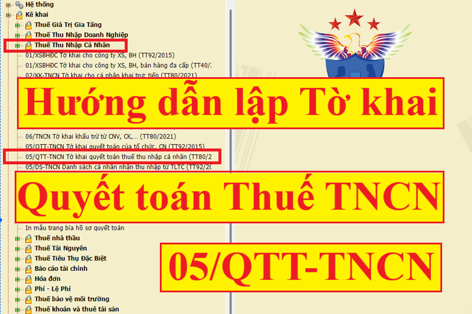
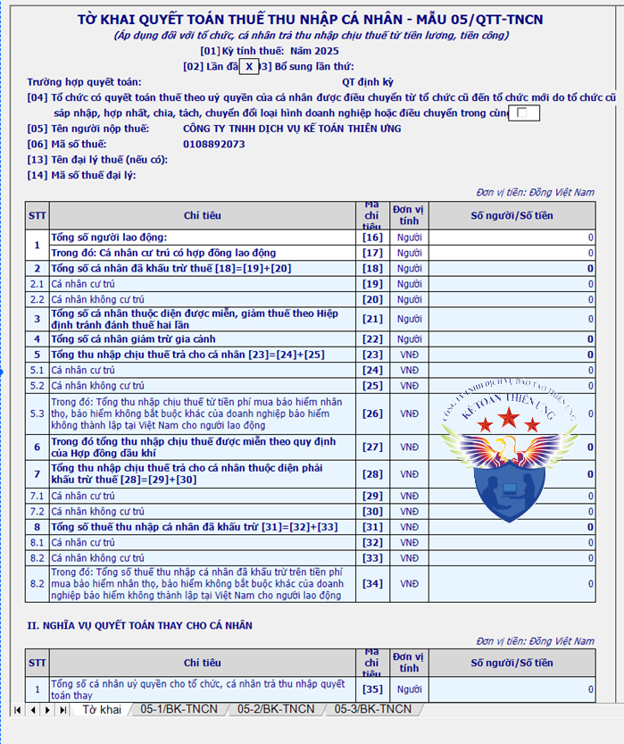
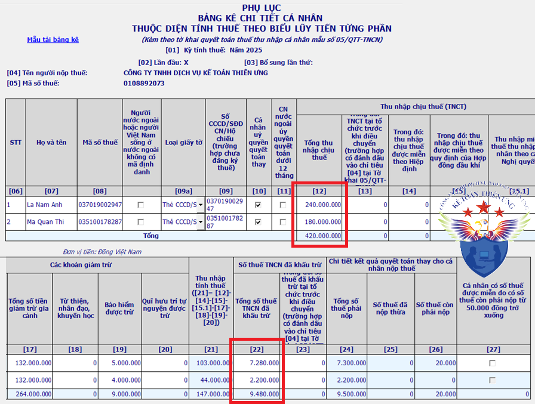
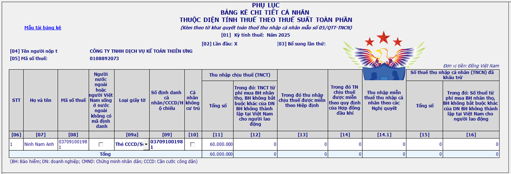

Hướng dẫn quyết toán thuế thu nhập cá nhân năm 2026; Cách làm tờ khai quyết toán thuế TNCN 05/QTT-TNCN; Cách lập Phụ lục 05-1/BK-TNCN, 05-2/BK-TNCN, 05-3/BK-TNCN kèm theo Tờ khai quyết toán thuế TNCN.
Lưu ý: Đây là mình hướng dẫn các bạn kế toán trong DN lập tờ khai quyết toán thuế TNCN mẫu 05/QTT-TNCN cho nhân viên trong công ty nhé. (Đây là tờ khai dành cho DN trả thu nhập chịu thuế từ tiền lương, tiền công cho cá nhân).
Quy định về việc kê khai quyết toán thuế TNCN:
Theo điều 8 Nghị định số 126/2020/NĐ-CP và Công văn 636/TCT-DNNCN quy định:
- Tổ chức, cá nhân trả thu nhập từ tiền lương, tiền công có trách nhiệm khai quyết toán thuế TNCN không phân biệt có phát sinh khấu trừ thuế hay không phát sinh khấu trừ thuế và quyết toán thuế TNCN thay cho cá nhân có ủy quyền.
- Trường hợp tổ chức, cá nhân không phát sinh trả thu nhập thì không phải khai quyết toán thuế thu nhập cá nhân.
- Trường hợp cá nhân có ủy quyền quyết toán thuế TNCN cho tổ chức và có số thuế phải nộp thêm sau quyết toán từ 50.000 đồng trở xuống thuộc diện được miễn thuế thì tổ chức trả thu nhập vẫn kê khai thông tin cá nhân được trả thu nhập đó tại hồ sơ khai quyết toán thuế TNCN của tổ chức và không tổng hợp số thuế phải nộp thêm của các cá nhân có số thuế phải nộp thêm sau quyết toán từ 50.000 đồng trở xuống.
- Trường hợp tổ chức trả thu nhập đã quyết toán thuế TNCN trước thời điểm có hiệu lực của Nghị định số 126/2020/NĐ-CP thì không xử lý hồi tố.
Như vậy:
- Công ty phải có trách nhiệm lập tờ khai quyết toán thuế TNCN và quyết toán thuế TNCN thay (trường hợp ủy quyền) cho tất cả những người lao động mà công ty đã trả lương trong năm kể cả lao động thời vụ (dù họ có phải nộp thuế TNCN hay là không phải nộp).
- Chỉ duy nhất trường hợp trong năm Cty không trả lương cho bất kỳ 1 người lao động nào => Thì không phải khai quyết toán thuế thu nhập cá nhân.
(Tức là không phải nộp Tờ khai Quyết toán thuế TNCN)
- Trường hợp cá nhân ủy quyền có số thuế phải nộp thêm sau quyết toán mà từ 50.000 trở xuống thì DN vẫn kê khai quyết toán -> Kê khai xong tích mục "Miễn thuế cho cá nhân ..." phần mềm sẽ tự động không tổng hợp số thuế phải nộp thêm.
--------------------------------------------------------------------------------------
Hướng dẫn lập tờ khai quyết toán thuế 05-QTT-TNCN trên HTKK:
Bước 1:
- Các bạn đăng nhập vào phần mềm HTKK bằng MST của DN.
Chú ý: Các bạn phải làm trên phần mềm HTKK mới nhất

-> Chọn mục “Thuế thu nhập cá nhân” -> Chọn “05/QTT-TNCN Tờ khai quyết toán của tổ chức, CN (TT80/2021)” -> Chọn “Kỳ tính thuế” -> Xong màn hình sẽ xuất hiện như hình dưới:

----------------------------------------------------------------------------------------------
Bước 2: Cách kê khai quyết toán thuế 05/QTT-TNCN:
=> Các bạn chỉ cần kê khai ở các phụ lục 05-1/BK-TNCN, 05-2/BK-TNCN và 05-3/BK-TNCN. Sau đó phần mềm sẽ tự động cập nhật sang Tờ khai 05/QTT-TNCN.
1. Cách lập PL 05-1/BK-TNCN
Chú ý:
- Những người lao động là: Cá nhân cư trú và ký hợp đồng từ 3 tháng trở lên (Tức là những cá nhân tính thuế theo Biểu lũy tiến từng phần) -> Thì mới được kê khai vào phụ lục 05-1/BK-TNCN này nhé.
- Trường hợp DN có nhiều lao động, các bạn có thể làm bảng kê này trên file Excel rồi tải lên phần mềm HTKK nhé => Chi tiết cách tải lên các bạn xem ở cuối phần 3 nhé.
- Lao động thử việc, có 2 trường hợp như sau:
+ Nếu đủ điều kiện ủy quyền -> Thì tổng tất cả thu nhập đều nhập vào Phụ lục 05-1/BK-TNCN.
VD: Nhân viên A ký hợp đồng thử việc 2 tháng -> Sau đó ký hợp đồng chính thức -> Cuối năm đủ điều kiện ủy quyền -> Thì nhập toàn bộ Tổng thu nhập (Cả 2 tháng thử việc và Các tháng chính thức) vào đây
+ Nếu Không đủ điều kiện ủy quyền -> Thì phải tách thu nhập từng phần để nhập vào 2 PL là 05-1/BK-TNCN và 05-2/BK-TNCN.
VD: Nhân viên A ký hợp đồng thử việc 2 tháng -> Sau đó ký hợp đồng chính thức -> Cuối năm Không đủ điều điện ủy quyền -> Thì phải tách thu nhập của 2 tháng thử việc cho vào 05-2/BK-TNCN còn thu nhập của các tháng chính thức thì nhập vào 05-1/BK-TNCN .
Chi tiết về các trường hợp được ủy quyền các bạn xem tại đây nhé:
Các trường hợp được ủy quyền quyết toán thuế TNCN

- Chỉ tiêu [07] đến [22]: Các bạn nhập theo từng cá nhân
- Nếu muốn thêm dòng thì các bạn ấn phím “F5” nhé.
[07] Họ và tên: Ghi rõ ràng, đầy đủ họ và tên của cá nhân cư trú nhận thu nhập từ tiền lương, tiền công có ký hợp đồng lao động từ 03 tháng trở lên, kể cả cá nhân nhận thu nhập chưa đến mức khấu trừ thuế hoặc cá nhân đã thôi việc tính đến thời điểm lập tờ khai.
[08] Mã số thuế: Ghi rõ ràng, đầy đủ mã số thuế của cá nhân theo Thông báo mã số thuế hoặc thẻ mã số thuế do cơ quan thuế cấp cho cá nhân.
Chú ý: Cá nhân ủy quyền bắt buộc phải có MST. (Tức là trường hợp cá nhân ủy quyền quyết toán thuế cho DN thì bắt buộc phải đăng ký MST cá nhân).
Xem thêm: Cách đăng ký mã số thuế cá nhân.
[09] Số CMND/CCCD/Hộ chiếu: Ghi số CMND hoặc số CCCD hoặc hộ chiếu đối với cá nhân chưa có mã số thuế.
- Nếu cá nhân nào uỷ quyền cho DN bạn thì bạn click vào ô vuông. Chỉ tiêu [10]
- Nếu cá nhân nước ngoài uỷ quyền quyết toán dưới 12 tháng thì bạn click vào ô vuông. Chỉ tiêu [11]
----------------------------------------------------------------------------------------------------
Phần “Thu nhập chịu thuế”:
Chỉ tiêu [12] Tổng số: Là tổng các khoản thu nhập chịu thuế từ tiền lương, tiền công đã trả trong kỳ cho cá nhân cư trú có ký hợp đồng lao động từ 03 tháng trở lên, kể cả các khoản tiền lương, tiền công nhận được do làm việc tại khu kinh tế và thu nhập được miễn, giảm thuế theo Hiệp định tránh đánh thuế hai lần.
Cách tính:
| Thu nhập chịu thuế | = | Tổng thu nhập | - | Các khoản được miễn thuế |
a. Tổng thu nhập:
- Là tổng số các khoản thu nhập chịu thuế từ tiền lương, tiền công và các khoản thu nhập chịu thuế khác có tính chất tiền lương, tiền công mà cơ quan chi trả đã trả cho cá nhân.
b. Các khoản được miễn thuế bao gồm:
- Tiền ăn giữa ca, ăn trưa không vựt quá: 730.000/tháng (Nếu DN tự nấu ăn hoặc mua suất ăn, cấp phiếu ăn cho nhân viên thì được miễn toàn bộ)
- Tiền phụ cấp trang phục không quá 5.000.000/năm. (Nếu nhận được bằng hiện vật thì được miễn toàn bộ)
- Tiền khoán chi công tác phí, điện thoại không vượt quá quy định trong quy chế của DN. (Các bạn tự xây dựng quy chế tiền lương, thưởng, phụ cấp… và không được vượt quá mức đó.. Nếu vượt quá sẽ tính vào thu nhập tính thuế).
- Tiền thuê nhà trả thay không vượt quá 15% tổng thu nhập chịu thuế (chưa bao gồm tiền thuê nhà)
- Tiền làm thêm giờ vào ngày nghỉ, lễ, làm việc ban đêm được trả cao hơn so với ngày bình thường.
VD: Làm ban ngày được 40.000 đ/h nhưng làm thêm giờ ban đêm được 60.000 đ/h. Thì thu nhập được miễn thuế là: 60.000 - 40.000 = 20.000đ/h.
VD: Trong năm 2026 nhân viên A có Tổng thu nhập là 220.000.000. Trong đó: Tiền ăn ca: 7.200.000. Tiền trang phục là: 4.000.000.
=> Nhập vào chỉ tiêu [12] - Tổng thu nhập chịu thuế = 220.000.000 - (7.200.000 + 4.000.000)
Chi tiết xem tại đây: Cách tính thuế thu nhập cá nhân
Chỉ tiêu [13]: Thu nhập chịu thuế tại tổ chức trước khi điều chuyển (trường hợp có đánh dấu vào chỉ tiêu [04] tại Tờ khai 05/QTT-TNCN)
Chỉ tiêu [14] Theo hiệp định: Là các khoản thu nhập chịu thuế làm căn cứ xét miễn, giảm thuế theo Hiệp định tránh đánh thuế hai lần.
Chỉ tiêu [15]: Là các khoản thu nhập chịu thuế được miễn theo quy định của hợp đồng dầu khí.
Chỉ tiêu [15.1]: Là các khoản thu nhập được miễn thuế TNCN theo các Nghị quyết.
-----------------------------------------------------------------------------------------------
Phần: “Các khoản giảm trừ”
Chỉ tiêu [16] Số lượng NPT tính giảm trừ: Là số người phụ thuộc mà cá nhân đã đăng ký tính giảm trừ gia cảnh cho người phụ thuộc.
Chỉ tiêu [17] Tổng số tiền giảm trừ gia cảnh: Là các khoản giảm trừ cho bản thân người nộp thuế và các khoản giảm trừ cho người phụ thuộc.
Chú ý phần này:
1. Giảm trừ bản thân:
a, Nếu là cá nhân Không ủy quyền:
- Mức giảm trừ bản thân sẽ được tính theo số tháng thực tế làm việc tại công ty khi quyết toán
Từ năm 2026, mức giảm trừ bản thân sẽ bằng 15.500.000đ/tháng
Ví dụ:
- Nhân viên B làm việc tại Cty Diệu Tâm từ tháng 2 – 6/2026 -> Sau đó nghỉ
-> Mức giảm trừ bản thân = 15,5tr x 5 tháng = 77,5tr
b, Nếu là cá nhân ủy quyền:
- Giảm trừ cho bản thân được tính đủ 12 tháng là 132 triệu đồng/năm. (áp dụng cho các năm trước năm 2026)
Từ năm 2026, mức giảm trừ bản thân sẽ bằng 15.500.000đ/tháng => nếu tính đủ 12 tháng sẽ là 186 triệu đồng/năm
Ví dụ:
- Nhân viên D ký hợp đồng lao động từ 2 - 12 (11 tháng) của năm 2026 và thực tế vẫn còn làm tại công ty -> Ủy quyền cho Công ty quyết toán -> Mức giảm trừ bản thân năm 2026 = 15,5tr x 12 tháng = 186tr
2. Giảm trừ người phụ thuộc:
a, Nếu là cá nhân Không ủy quyền:
- Các bạn cũng xác định như trên nhé. Nhưng chú ý là được tính theo thời điểm đăng ký nhé.
Từ năm 2026, mức giảm trừ người phụ thuộc sẽ bằng 6.200.000đ/người phụ thuộc/tháng
Ví dụ:
- Nhân viên B đăng ký người phụ thuộc từ tháng 2 đến tháng 6 năm 2026 nghỉ -> Giảm trừ cho người phụ thuộc = 6,2tr x 5 tháng.
- Nhân viên C đăng ký người phụ thuộc từ tháng 6 đến tháng 10 năm 2026 nghỉ -> Mức giảm trừ = (6,2 tr x 5 tháng).
b, Nếu là cá nhân ủy quyền:
- Thì giảm trừ cho người phụ thuộc là4,4tr/ tháng và được tính đủ theo thực tế phát sinh (áp dụng cho các năm trước năm 2026)
6,2tr/ tháng và được tính đủ theo thực tế phát sinh (áp dụng từ năm 2026 trở đi)
Ví dụ:
- Nhân viên D đăng ký người phụ thuộc từ tháng 2 đến tháng 12/2026 (11 tháng) -> Ủy quyền cho Công ty quyết toán -> Mức giảm trừ = 6,2 tr x 11 tháng.
Xem thêm: Cách đăng ký người phụ thuộc.
Chỉ tiêu [18] Từ thiện, nhân đạo, khuyến học: Là các khoản chi đóng góp vào các tổ chức, cơ sở chăm sóc, nuôi dưỡng trẻ em có hoàn cảnh đặc biệt khó khăn, người tàn tật, người già không nơi nương tựa; các khoản chi đóng góp vào các quỹ từ thiện, quỹ nhân đạo, quỹ khuyến học được thành lập và hoạt động vì mục đích từ thiện, nhân đạo, khuyến học, không nhằm mục đích lợi nhuận (nếu có).
Chỉ tiêu [19] Bảo hiểm được trừ: Là các khoản đóng góp bảo hiểm gồm: bảo hiểm xã hội, bảo hiểm y tế, bảo hiểm thất nghiệp, bảo hiểm trách nhiệm nghề nghiệp đối với một số ngành nghề phải tham gia bảo hiểm bắt buộc.
Cụ thể: BHXH: 8%, BHYT: 1,5%, BHTN: 1%
Ví dụ: Cty bạn tham gia BHXH cho nhân viên E từ tháng 01 - 12 (tức là 12 tháng) và hàng tháng trích Bảo hiểm của nhân viên E là 600.000/tháng (trừ vào lương của họ).
-> Như vậy: Số tiền nhập vào chỉ tiêu [19] = 600.000 x 12 tháng = 7.200.000
Xem thêm: Tỷ lệ trích các khoản bảo hiểm
Chỉ tiêu [20] Quỹ hưu trí tự nguyện được trừ: Là các khoản đóng góp vào Quỹ hưu trí tự nguyện theo thực tế phát sinh nhưng tối đa không quá 01 triệu đồng/tháng, kể cả trường hợp đóng góp vào nhiều quỹ.
------------------------------------------------------------------------------------
Chỉ tiêu [21]: Thu nhập tính thuế: Phần mềm sẽ tự động cập nhật.
Chỉ tiêu [22] Số thuế TNCN đã khấu trừ: Là số thuế thu nhập cá nhân mà tổ chức, cá nhân trả thu nhập đã khấu trừ của cá nhân cư trú có hợp đồng lao động từ 03 tháng trở lên trong kỳ.
VD: Trong năm 2026 DN bạn đã kê khai và nộp thuế TNCN hàng tháng/quý của Nhân viên F như sau:
- Qúy 1: 300.000
- Qúy 2: 150.000
- Qúy 3: 150.000
- Qúy 4: 100.000.
=> Như vậy tổng cộng là 700.000, thì nhập vào đây: 700.000
Chỉ tiêu [23] Số thuế TNCN đã khấu trừ tại tổ chức trước khi điều chuyển..
---------------------------------------------------------------------------------------------
Phần"Chi tiết kết quả quyết toán thay cho cá nhân nộp thuế"
Lưu ý: Chỉ những cá nhân ủy quyền cho DN quyết toán thuế TNCN thay cho mình thì mới xuất hiện phần này nhé.
Chỉ tiêu [24] Tổng số thuế phải nộp:
- Là tổng số thuế phải nộp của cá nhân uỷ quyền quyết toán thay. Phần mềm sẽ tự động cập nhật
Chỉ tiêu [25] Số thuế đã nộp thừa: Nếu xuất hiện chỉ tiêu này thì các bạn có thể làm thủ hoàn thuế hoặc chuyển kỳ sau.
Chỉ tiêu [26] Số thuế còn phải nộp: Nếu xuất hiện chỉ tiêu này thì DN các bạn phải thông báo cho nhân viên đó để thu thêm và nộp vào ngân sách ngay nhé.
Chỉ tiêu [27] Cá nhân có số thuế được miễn do có số thuế còn phải nộp từ 50.000đ trở xuống: Nếu cá nhân có số thuế còn phải nộp từ 50.000đ thì bạn có thể tích vào chỉ tiêu này.
Lưu ý:
- Sau khi đã nhập xong các Chỉ tiêu, các bạn tích vào chỉ tiêu [27] => Phần mềm sẽ tự động không tổng hợp số thuế phải nộp thêm đó.
-> Sau khi nhập xong bên Phụ lục 05-1BK-TNCN các bạn ấn "Ghi" để phần mềm HTKK sẽ tự động cập nhật số liệu sang bên Tờ khai 05-QTT-TNCN -> Các bạn bấm vào Tờ khai 05-QTT-TNCN để xem số liệu nhé.
----------------------------------------------------------------------------
2. Cách lập Phụ lục 05-2/BK-TNCN:

Chú ý: - Những cá nhân ký hợp đồng khoán việc, hợp đồng < 3 tháng hoặc những cá nhân không cư trú (Những cá nhân tính thuế theo Biểu Toàn phần) các bạn kê khai vào đây nhé.
- Dù có làm cam kết 08/CK-TNCN, tức là chưa khấu trừ thuế TNCN của cá nhân đó thì cũng phải kê khai vào đây nhé.
- Trường hợp hợp đồng thử việc xong -> Không ký hợp đồng chính thức hoặc không đủ điều kiện ủy quyền quyết toán cuối năm -> Thì cũng nhập phần thu nhập đó vào đây nhé.
- Trường hợp DN có nhiều lao động, các bạn có thể làm bảng kê này trên file Excel rồi tải lên phần mềm HTKK nhé => Chi tiết cách tải lên các bạn xem ở cuối phần 3 nhé.
Chỉ tiêu [07] đến [09]: Các bạn nhập theo từng cá nhân. (Cũng giống như phần trên: Cách lập PL 05-1/BK-TNCN nhé).
- Nếu muốn thêm dòng thì các bạn ấn phím “F5” nhé.
Lưu ý: Những cá nhân lao động mà không khấu trừ thuế TNCN (tức là làm cam kết 08/CK-TNCN) -> Thì bắt buộc phải có MST nhé.
- Nếu là cá nhân không cư trú thì bạn click vào ô vuông. Chỉ tiêu [10]
Xem thêm: Phân biệt cá nhân cư trú và không cư trú
-----------------------------------------------------------------------------------------------
Phần: “Thu nhập chịu thuế (TNCT)”
Chi tiêu [11] Tổng số: Là tổng các khoản thu nhập chịu thuế từ tiền lương, tiền công đã trả trong kỳ cho cá nhân cư trú không ký hợp đồng lao động hoặc có hợp đồng lao động dưới 03 tháng và cá nhân không cư trú trong kỳ, kể cả các khoản tiền lương, tiền công nhận được do làm việc tại khu kinh tế và thu nhập được miễn, giảm thuế theo Hiệp định tránh đánh thuế 2 lần; và các khoản phí mà tổ chức, cá nhân trả thu nhập mua bảo hiểm nhân thọ, bảo hiểm không bắt buộc khác của doanh nghiệp bảo hiểm không thành lập tại Việt Nam cho người lao động.
Lưu ý: Các khoản phụ cấp cho cá nhân lao động dưới 3 tháng này không được giảm trừ, miễn thuế. Tức là Tổng thu nhập bao nhiêu các bạn nhập vào chỉ tiêu 11 bấy nhiêu nhé.
Ví dụ: Nhân viên K có hợp đồng thời vụ < 3 tháng, mức lương 3 tr, phụ cấp tiền ăn 300.000 thì tổng tiền chịu thuế là 3.300.000 => Nhập vào Chỉ tiêu 11 - Tổng số (Thu nhập chịu thuế) là: 3.300.000
Xem thêm: Cách tính thuế TNCN lao động thử việc
Chỉ tiêu [12] TNCT từ phí mua bảo hiểm nhân thọ, bảo hiểm không bắt buộc khác của doanh nghiệp bảo hiểm không thành lập tại Việt Nam cho người lao động: Là khoản tiền mà tổ chức, cá nhân trả thu nhập mua bảo hiểm nhân thọ, bảo hiểm không bắt buộc khác có tích lũy về phí bảo hiểm của doanh nghiệp bảo hiểm không thành lập tại Việt Nam cho người lao động.
Chỉ tiêu [13] Theo hiệp định: Là các khoản thu nhập chịu thuế làm căn cứ xét miễn, giảm thuế theo Hiệp định tránh đánh thuế hai lần.
Chỉ tiêu [14]: Là các khoản thu nhập chịu thuế được miễn theo quy định của hợp đồng dầu khí.
-------------------------------------------------------------------------------------
Phần "Số thuế TNCN đã khấu trừ":
Chỉ tiêu [15] Tổng số: Là tổng số thuế thu nhập cá nhân mà tổ chức, cá nhân trả thu nhập đã khấu trừ của từng cá nhân trong kỳ.
Lưu ý: Trường hợp những nhân viên nào mà làm bản cam kết 08/CK-TNCN (Tức là không khấu trừ 10% thuế TNCN) thì các bạn nhập số 0 vào đây.
Chỉ tiêu [16] Số thuế từ phí mua bảo hiểm nhân thọ, bảo hiểm không bắt buộc khác của doanh nghiệp bảo hiểm không thành lập tại Việt Nam cho người lao động: Là số thuế thu nhập cá nhân mà tổ chức, cá nhân trả thu nhập đã khấu trừ trên khoản tiền phí mua bảo hiểm nhân thọ, bảo hiểm không bắt buộc khác có tích lũy về phí bảo hiểm của doanh nghiệp bảo hiểm không thành lập tại Việt Nam cho người lao động.
Chỉ tiêu [16] = [12] * 10%
------------------------------------------------------------------------------------------------
3. Cách lập PL 05-3/BK-TNCN:
Lưu ý: DN bạn phải Căn cứ vào hồ sơ chứng minh NPT và Thông tin trên mẫu Tờ khai đăng ký NPT giảm trừ gia cảnh (Mẫu 20/ĐK-TCT) khi đăng ký người phụ thuộc, để khai vào Phụ lục 05- 3/BK-TNCN.
- DN khai đầy đủ (100%) số lượng NPT đã tính giảm trừ trong năm 2026 vào Phụ lục 05-3/BK-TNCN.
- Trường hợp thông tin NPT chỉ có năm sinh nhưng không có ngày, tháng thì lấy ngày 01 tháng 01 nhập vào chỉ tiêu “Ngày sinh” (01/01/năm sinh).
- Cột cuối cùng "Thời gian tính giảm trừ - Đến tháng" thì các bạn phải gõ đến tháng năm hiện tại Quyết toán thôi nhé (Nếu dùng mẫu 02TH)
VD: 12/2026
Cách nhanh nhất để làm PL 05-3/BK-TNCN:
- Khi DN bạn đăng ký người phụ thuộc -> Các bạn nên làm trên phần mềm HTKK rồi nộp qua mạng (Mục đích là kết xuất 1 bản đó ra file Excel).
- Tiếp đó, đến cuối năm khi Lập Tờ khai quyết toán thuế TNCN -> Làm Phụ lục 05-3/BK-TNCN, các bạn chỉ cần Tải mẫu phụ lục 05-3/BK-TNCN file Excel trên phần mềm HTKK về máy tính. => Sau đó copy số liệu từ file Excel mẫu 20-ĐK-TCT rồi paste vào file Excel 05-3/BK-TNCN đó rồi tải lại lên trên phần mềm HTKK là xong.
Xem thêm: Cách tải file Excel vào HTKK.
------------------------------------------------------------------
Cuối cùng:
=> Sau khi đã kê khai xong 3 phụ lục các bạn ấn :"Ghi" -> Bấm sang bên Tờ khai 05-QTT-TNCN để kiểm tra số liệu.
- Nếu xuất hiên chỉ tiêu [40] thì các bạn phải nộp thêm tiền thuế đó
- Nếu xuất hiện chỉ tiêu [41] thì các bạn theo dõi bù trừ kỳ sau hoặc làm thủ tục hoàn thuế TNCN
Cần biết: Khi kết xuất, các bạn nên Kết xuất 1 bản Excel để lưu tại DN và 1 bản XML để nộp qua mạng.
- Vì trên thuedientu không có chức năng tải Tờ khai Quyết toán thuế TNCN -> Nên khi có vấn đề gì thì rất khó để xử lý.
------------------------------------------------------------------------------------------------
4. Thời hạn nộp tờ khai quyết toán thuế TNCN:
- Thời hạn nộp Tờ khai Quyết toán thuế TNCN cũng là thời hạn nộp Tiền thuế (nếu có) => Chậm nhất là ngày cuối cùng của tháng thứ 3 kể từ ngày kết thúc năm dương lịch.
---------------------------------------------------------------------------------
Các bạn muốn được tìm hiểu 1 cách chuyên sâu về thuế: Kê khai thuế tháng/quý, quyết toán thuế cuối năm ... và cách tiết kiệm chi phí thuế phải nộp cho DN... có thể tham gia: Khóa học kế toán thuế thực hành.
------------------------------------------------------------